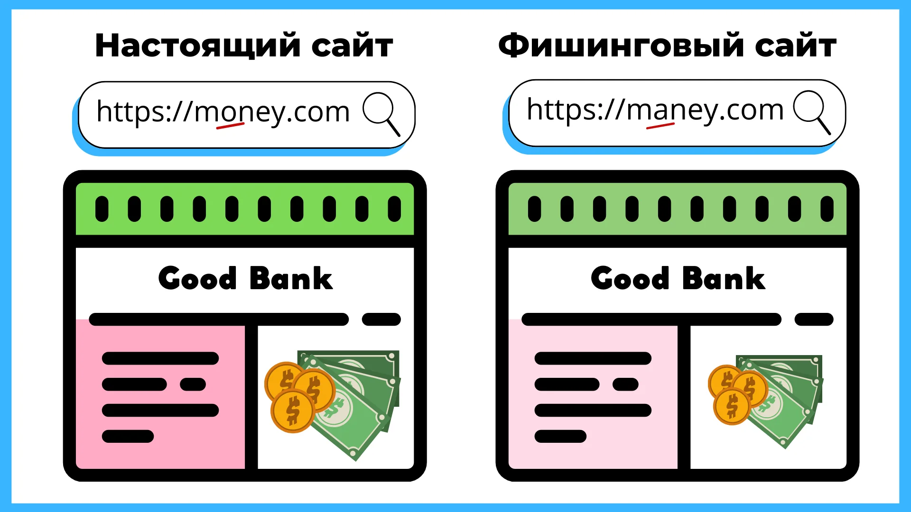
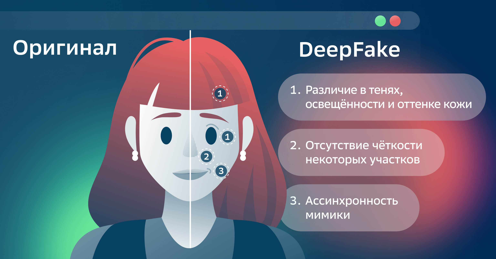

Запомни !
- Большинство атак — это обман. Мошенники заставляют вас самим(ой) нажать ссылку, установить программу или сообщить код.
- Главное правило: если торопят, пугают, обещают «приз» — остановитесь и проверьте.
Основные источники угроз (Каналы атак)
- Почта: не открывайте неожиданные вложения; не включайте макросы; проверяйте адрес отправителя.
- Мессенджеры/соцсети: «друг» прислал ссылку — уточните у него другим способом (звонок/голосовое).
- Звонки/SMS: не сообщайте коды из SMS и данные карты; перезванивайте по официальному номеру.
- Сайты/реклама: переходите на важные сервисы только через закладки/вручную набранный адрес.
- Публичный Wi-Fi: не заходите в банк/госуслуги; лучше мобильный интернет или VPN.
Стоп перед кликом: кому выгодно, чтобы вы «срочно» что-то сделали?
Фишинг и поддельные ресурсы
- Проверяйте домен: одна лишняя буква, другая зона (.ru → .net), лишние слова (…-online…).
- Признаки фишинга: срочность/угрозы, «Уважаемый клиент», ошибки, просьба ввести пароль/код/данные карты.
- Правильное действие: откройте сервис через официальное приложение или вручную введённый адрес, а не по ссылке из письма.
- Если уже ввели пароль: срочно смените его на настоящем сайте и включите 2FA.
- Если ввели данные карты: сразу свяжитесь с банком по официальному номеру и заблокируйте операции.
Никто «официальный» не просит пароль и коды подтверждения в письме/чате.
Социальная инженерия (манипуляции)

- Пауза 30 секунд: срочность — главный инструмент мошенника.
- Никогда не сообщайте коды из SMS, пароли, CVV/CVC, «секретные слова».
- Не устанавливайте программы удалённого доступа по просьбе «техподдержки».
- Перезвоните сами по официальному номеру (с карты/сайта), а не по номеру из звонка.
- Договоритесь о проверке: в семье/с друзьями — контрольный вопрос или фраза.
Фраза-щит: «Я перезвоню по официальному номеру и уточню информацию».
Вредоносное ПО (вирусы, трояны, шпионы, вымогатели)

- Обновления: регулярно обновляйте систему и приложения.
- Источники: скачивайте программы только с официальных сайтов/магазинов.
- Вложения и файлы: не запускайте неизвестные файлы и «кряки».
- Защита: держите антивирус/защитник включённым.
- Backup: делайте резервные копии важных файлов (облако/внешний носитель).
От вымогателей лучше всего спасают резервные копии.
Дипфейки и подделка голоса/видео
- Не верьте «шок-контенту» сразу: перепроверьте в нескольких источниках.
- Если просят деньги/коды: прервите разговор и перезвоните по известному номеру.
- Сигналы подделки: странные артефакты лица, неестественный звук/паузы, несовпадение губ и речи.
- Правило: важные решения — только после подтверждения через другой канал связи.
Если «голос знакомого» просит перевести деньги — сначала проверка (вопрос/перезвон).
5 привычек цифровой безопасности
- Не спешить (пауза перед кликом/переводом).
- Проверять адреса сайтов и отправителей.
- Не сообщать коды/пароли/данные карты.
- Обновлять устройства и приложения.
- Делать резервные копии важных файлов.